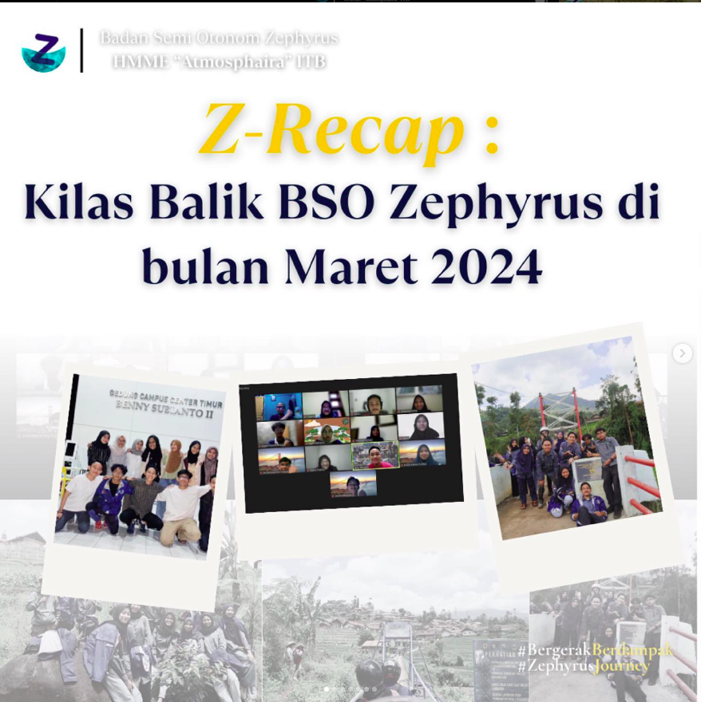
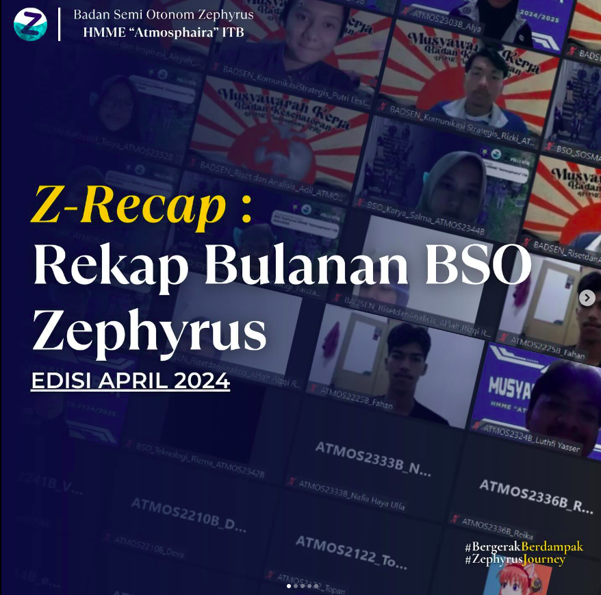
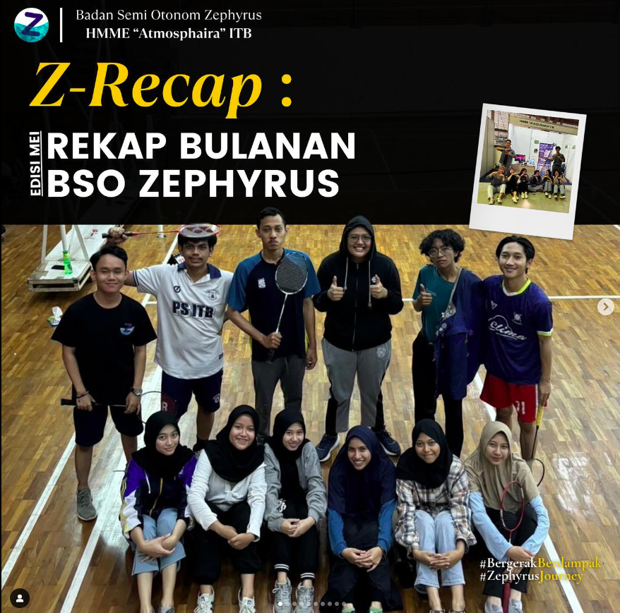
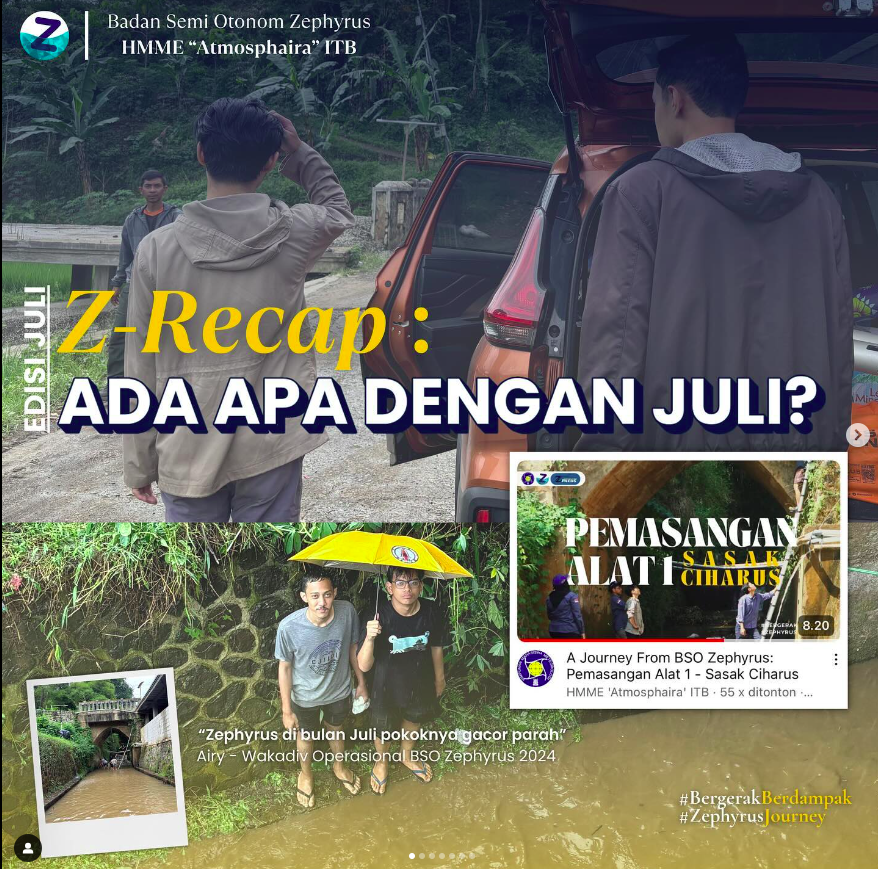
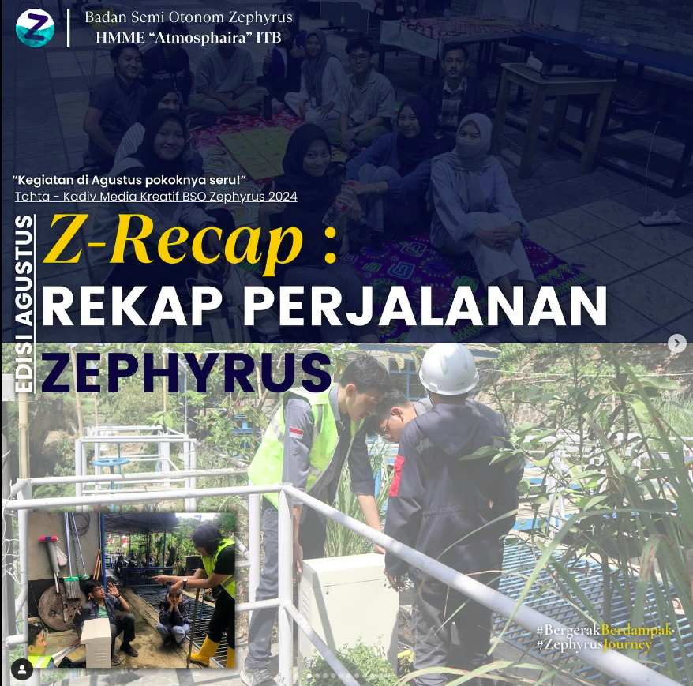
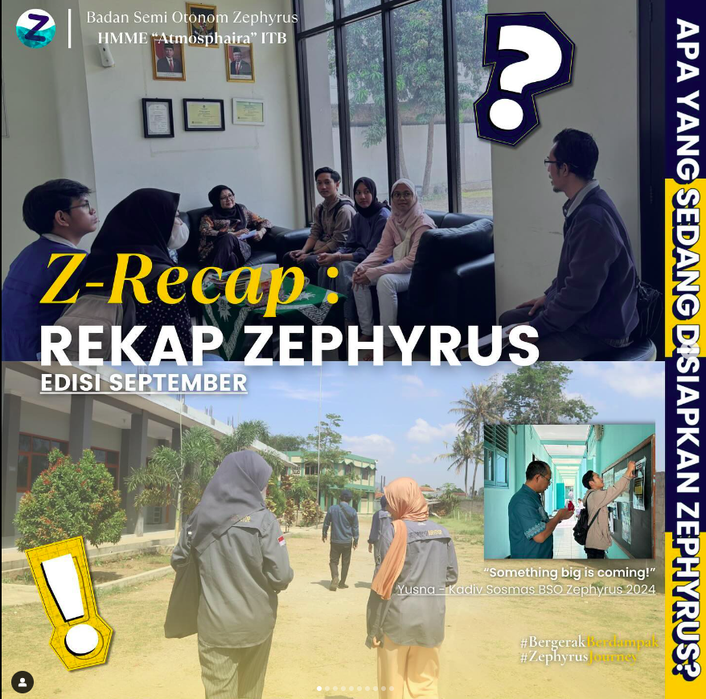
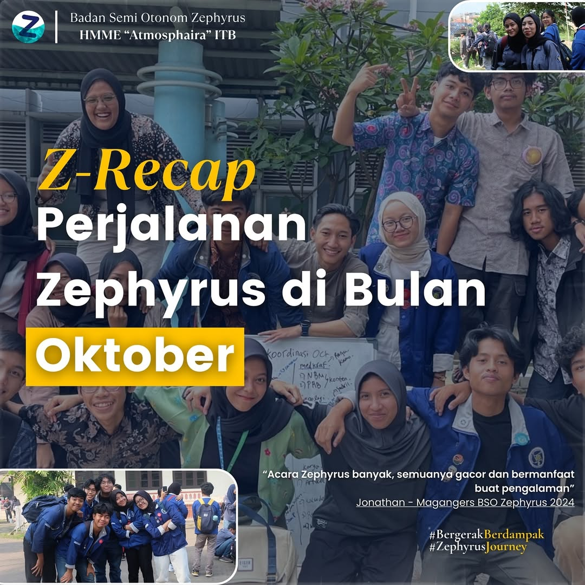
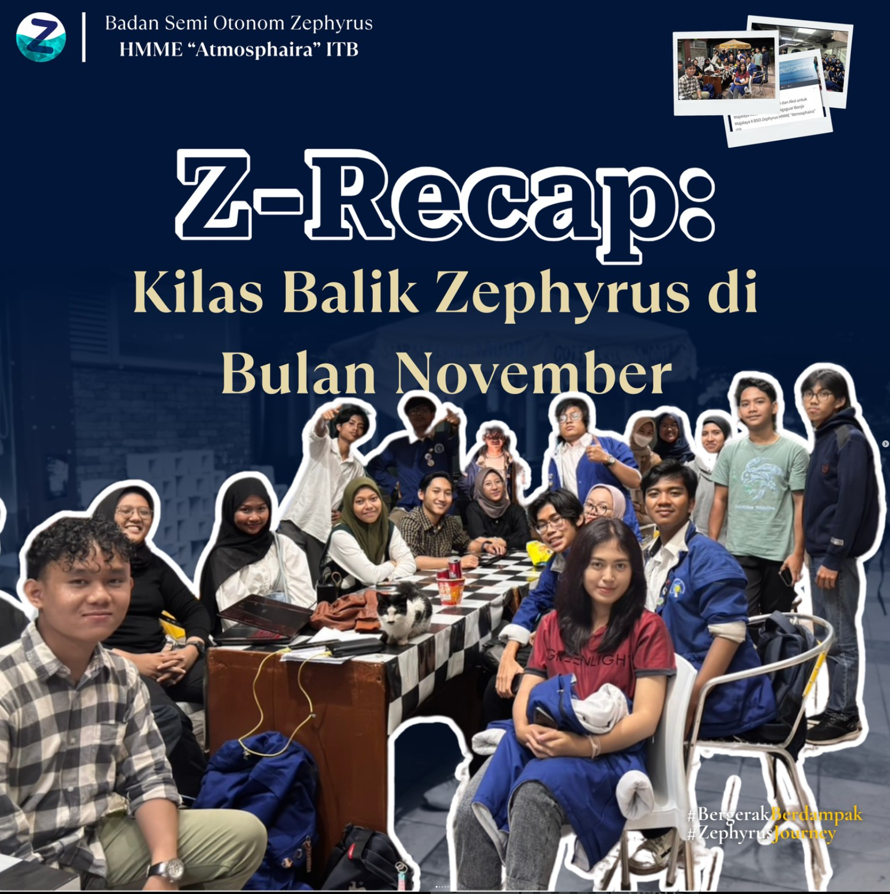
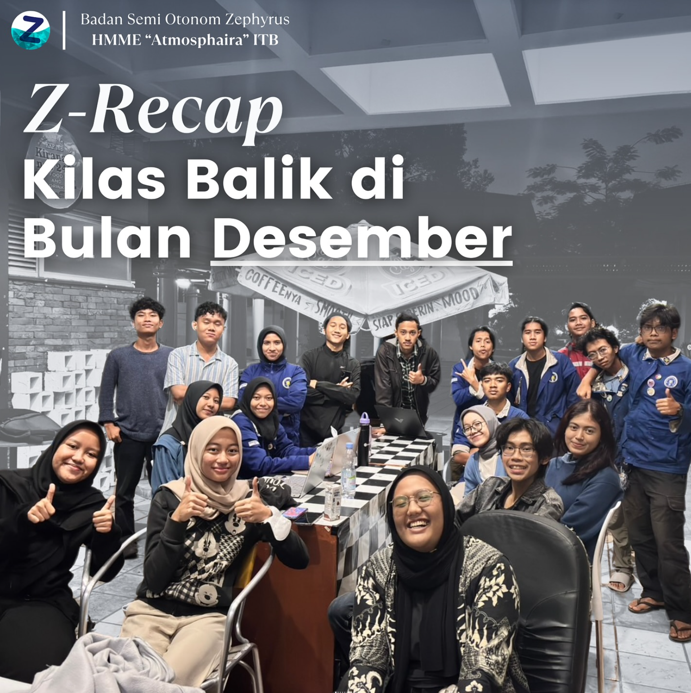

<!DOCTYPE html>
<html lang="id">
    <head>
        <meta charset="UTF-8" />
        <meta name="viewport" content="width=device-width, initial-scale=1.0" />
        <meta name="keywords" content="Pengabdian Masyarakat, Risiko Bencana, Majalaya, SPAB, Automatic Water Level Recorder, BSO Zephyrus, HMME, Atmosphaira, ITB">
        <title> BO Zephyrus ITB</title>
        <link rel="icon" type="image/png" href="../assets/img/Logo Zephyrus.png">

        <CSS -->
        <link rel="stylesheet" href="assets/css/styles.css" />
        <link href="https://cdn.jsdelivr.net/npm/fullcalendar@6.1.18/index.global.min.css" rel="stylesheet">
        <link rel="stylesheet" href="https://cdnjs.cloudflare.com/ajax/libs/font-awesome/6.4.2/css/all.min.css">
        <link rel="stylesheet" href="https://unpkg.com/leaflet@1.9.4/dist/leaflet.css" integrity="sha256-p4NxAoJBhIIN+hmNHrzRCf9tD/miZyoHS5obTRR9BMY=" crossorigin="" />

        <!-- SCRIPT AMBIL DATA API -->
<script>
    const chanID = '3017816';
    const apiKey = '5VY6F26XU99D4VJO';

    async function fetchData() {
        try {
            const resp = await fetch(`https://api.thingspeak.com/channels/${chanID}/feeds.json?results=1&api_key=${apiKey}`);
            const json = await resp.json();
            const feed = json.feeds[0];

            if (feed) {
                const time = new Date(feed.created_at).toLocaleTimeString('id-ID');

                // Mapping Data (Sesuaikan nomor field dengan ThingSpeak kamu)
                updateUI('ch-cibangoak', feed.field1, 'mm', time);
                updateUI('tma-cibangoak', feed.field2, 'cm', time);
                updateUI('ch-ciharus', feed.field3, 'mm', time);
                updateUI('tma-ciharus', feed.field4, 'cm', time);
                updateUI('tma-sanding', feed.field5, 'cm', time);
                updateUI('ch-sanding', feed.field6, 'mm', time);
            }
        } catch (e) { console.error("Error Fetch:", e); }
    }

    function updateUI(id, val, unit, time) {
        const valEl = document.getElementById(id);
        const timeEl = document.getElementById('ts-' + id);
        const statEl = document.getElementById('st-' + id);

        if (val !== null) {
            valEl.innerHTML = `${parseFloat(val).toFixed(1)}<small>${unit}</small>`;
            timeEl.innerText = time;
            statEl.innerText = "Normal";
            statEl.className = "data-status status-ok";
        }
    }

    // Jalankan setiap 10 detik
    fetchData();
    setInterval(fetchData, 10000);
</script>
<script>

async function checkLogin(){

    const res = await fetch("/me");

    const data = await res.json();

    const loginItem = document.getElementById("loginItem");
    const usernameItem = document.getElementById("usernameItem");
    const usernameText = document.getElementById("usernameText");

    if(data.loggedIn){

        usernameItem.style.display = "block";
        usernameText.innerText = data.username;

        loginItem.innerText = "Logout";
        loginItem.href = "/logout";

    }else{

        usernameItem.style.display = "none";

        loginItem.innerText = "Login";
        loginItem.href = "/login";

    }

}

checkLogin();

</script>

</body>
</html>
<!-- SCRIPT AMBIL DATA API -->
<header class="header">
    <div class="container flex-row header-container">
        <div class="header__logo">
            <a href="tes_carousel.html">
                
            </a>
        </div>
        
        <div class="header__nav-wrapper">
            <ul class="header__menu-desktop">
                <li><a href="tes_carousel.html">Beranda</a></li>
                <!-- Data -->
                <li><a href="Data.html">Data</a></li>
                <!-- Artikel -->
                <li><a href="artikel/art.html">Artikel</a></li>
            </ul>
            
            <button class="hamburger-btn" id="hamburger-trigger" aria-label="Buka Menu">
                <i class="fas fa-bars"></i>
            </button>
        </div>

        <div class="hamburger-dropdown" id="hamburger-target">
            <ul>

                <li>
                    <a href="profile.html" class="sub-menu-item">
                        Profil
                    </a>
                </li>

                <li>
                    <a href="kalender.html" class="sub-menu-item">
                        Kalender
                    </a>
                </li>

                <!-- Username muncul setelah login -->
                <li id="usernameItem" style="display:none;">
                    <span class="user-info">
                        <i class="fas fa-user-circle"></i>
                        <span id="usernameText"></span>
                    </span>
                </li>

                <!-- Login berubah menjadi Logout -->
                <li id="loginItem">
                    <a href="login.html" class="sub-menu-item login-highlight">
                        Login
                    </a>
                </li>

            </ul>
        </div>
    </div>
</header>
    <!-- HEADER -->
         <div class="gradient"></div> 

  <div class="carousel" mask>
    <!-- Maret -->
    <article>
      <a href="https://www.instagram.com/p/C7i-3cLPwxS/?img_index=3" target = "_blank">
          
      </a>
      <h2>Z - Recap Maret</h2>
    </article>
  <!-- April -->
    <article>
      <a href="https://www.instagram.com/p/C8T27tTSO6I/?img_index=3" target = "_blank">
        
      </a>
      <h2>Z - Recap April</h2>
    </article>
  <!-- Mei -->
    <article>
      <a href="https://www.instagram.com/p/C8i-HJDy7RJ/?img_index=3" target = "_blank">
        
      </a>
      <h2>Z - Recap Mei</h2>
    </article>
  <!-- Juni -->
    <article>
      <a href="https://www.instagram.com/p/C8_4tQQyurQ/?img_index=3" target = "_blank">
        
      </a>
      <h2>Z - Recap Juni</h2>
    </article>
  <!-- Juli -->
    <article>
      <a href="https://www.instagram.com/p/C-W5YZ_SZXC/?img_index=3" target = "_blank">
        
      </a>
      <h2>Z - Recap Juli</h2>
    </article>
  <!-- Agustus -->
    <article>
      <a href="https://www.instagram.com/p/C_ffbt3yoAv/?img_index=3" target = "_blank">
        
      </a>
      <h2>Z - Recap Agustus</h2>
    </article>
  <!-- September -->
  <article>
    <a href="https://www.instagram.com/p/DA0A1RDy7-F/?img_index=3" target = "_blank">
      
    </a>
    <h2>Z - Recap September</h2>
  </article>
  <!-- Oktober -->
  <article>
    <a href="https://www.instagram.com/p/DCTV_dfy78W/?img_index=3" target = "_blank">
      
    </a>
    <h2>Z - Recap Oktober</h2>
  </article>
  <!-- November -->
  <article>
    <a href="https://www.instagram.com/p/DDuU6eJvRyb/?img_index=1" target = "_blank">
      
    </a>
    <h2>Z - Recap November</h2>
  </article>
  <!-- Desember -->
  <article>
    <a href="https://www.instagram.com/p/DFH8WIoyn1A/?img_index=1" target = "_blank">
      
    </a>
    <h2>Z - Recap Desember</h2>
  </article>

  </div>

      <div class="hero__content" data-aos="fade-right">
        <!-- Batas data container -->

<div class="dashboard-box-wrapper" style="background: rgba(255, 255, 255, 0.65); border: 1px solid rgba(0, 0, 0, 0.05); border-radius: 20px; padding: 1.5rem 1.5rem 2rem 1.5rem; box-shadow: 0 10px 30px rgba(0, 0, 0, 0.03); max-width: 1240px; margin: 0 auto;">
    
    <div class="dashboard-header text-center" style="margin-bottom: 1rem; width: 100%;">
        <h2 class="section-heading" style="margin: 20px auto 5px auto; text-align: center; font-size: 2.2rem; font-weight: 700; color: #011638;">MONITORING DATA REAL-TIME</h2>
        <p class="dashboard-subtitle" style="font-size: 1rem; color: #555; font-weight: 400; margin: 0 auto 40px auto;">Data Real-Time Curah Hujan & Tinggi Muka Air (TMA)</p>
    </div>

    <div class="dashboard-container" style="padding: 0 !important; background-color: transparent !important; display: flex; flex-wrap: wrap; justify-content: center; gap: 1.5rem;">
        
        <div class="location-group">
            <h2 class="location-label">Cibangoak</h2>
            <div class="data-card">
        <!-- Curah Hujan -->
                <p class="data-type">Curah Hujan</p>
                <div class="data-value" id="ch-cibangoak">
                    --<small>mm</small>
                </div>
                <p class="data-status status-ok" id="st-ch-cibangoak">
                    Menghubungkan...
                </p>

                <hr class="divider">

                <!-- Tinggi Muka Air -->
                <p class="data-type">Tinggi Muka Air</p>
                <div class="data-value" id="tma-cibangoak">
                    --<small>cm</small>
                </div>
                <p class="data-status status-ok" id="st-tma-cibangoak">
                Menghubungkan...
                </p>

                <span class="data-time" id="ts-cibangoak">
                --:--:--
                </span>
            </div>
        </div>

        <div class="location-group">
            <h2 class="location-label">Ciharus</h2>
            <div class="data-card">
        <!-- Curah Hujan -->
                <p class="data-type">Curah Hujan</p>
                <div class="data-value" id="ch-ciharus">
                    --<small>mm</small>
                </div>
                <p class="data-status status-ok" id="st-ch-cibangoak">
                    Menghubungkan...
                </p>

                <hr class="divider">

                <!-- Tinggi Muka Air -->
                <p class="data-type">Tinggi Muka Air</p>
                <div class="data-value" id="tma-ciharus">
                    --<small>cm</small>
                </div>
                <p class="data-status status-ok" id="st-tma-cibangoak">
                Menghubungkan...
                </p>

                <span class="data-time" id="ts-cibangoak">
                --:--:--
                </span>
            </div>
        </div>

        <div class="location-group">
            <h2 class="location-label">Sanding</h2>
            <div class="data-card">
        <!-- Curah Hujan -->
                <p class="data-type">Curah Hujan</p>
                <div class="data-value" id="ch-sanding">
                    --<small>mm</small>
                </div>
                <p class="data-status status-ok" id="st-ch-cibangoak">
                    Menghubungkan...
                </p>

                <hr class="divider">

                <!-- Tinggi Muka Air -->
                <p class="data-type">Tinggi Muka Air</p>
                <div class="data-value" id="tma-sanding">
                    --<small>cm</small>
                </div>
                <p class="data-status status-ok" id="st-tma-sanding">
                Menghubungkan...
                </p>

                <span class="data-time" id="ts-cibangoak">
                --:--:--
                </span>
            </div>
        </div>
        
    </div> 
</div>
        <!-- Batas data Kontainer -->
       <section id="gis" style="padding: 3rem 0; background-color: transparent;">
    <div class="container">
            <div class="gradient"></div> 

        <div class="gis-box-wrapper" style="background: rgba(255, 255, 255, 0.65); border: 1px solid rgba(0, 0, 0, 0.05); border-radius: 20px; padding: 2rem 1.5rem; box-shadow: 0 10px 30px rgba(0, 0, 0, 0.03); max-width: 1240px; margin: 0 auto;">
            
            <div class="gis-header text-center" style="margin-bottom: 1.5rem; width: 100%;">
                <h2 class="section-heading" style="margin: 0 auto 0.3rem auto; text-align: center; font-size: 2.2rem; font-weight: 700; color: #011638;">PETA MONITORING SENSOR</h2>
                <p class="gis-subtitle" style="font-size: 1rem; color: #555; font-weight: 400; margin: 0; text-align: center;">Monitoring Curah Hujan dan Tinggi Muka Air secara real-time.</p>
            </div>

            <div class="gis-map-card" style="border-radius: 14px; overflow: hidden; border: 1px solid rgba(0, 0, 0, 0.08); box-shadow: 0 4px 15px rgba(0, 0, 0, 0.02); background: #fff;">
                
                <div id="gis-map" style="height: 450px; width: 100%; z-index: 1;"></div>

                <!-- Legend Status -->
    <div class="map-legend">

    <div class="legend-item">
        <span class="legend-dot green"></span>
        <span>Normal</span>
    </div>

    <div class="legend-item">
        <span class="legend-dot yellow"></span>
        <span>Waspada</span>
    </div>

    <div class="legend-item">
        <span class="legend-dot red"></span>
        <span>Bahaya</span>
    </div>

  </div>

</div>

    </div>

</div>

            </div>

        </div> </div> </section>
    <!-- BAGIAN KONTAK -->
<!-- CONTACT -->
<section id="contact" style="background: url(assets/img/contact-bg.png); background-repeat: no-repeat; background-position: right; background-size: contain;">
  <div class="container">
    <h2 class="section-heading text-center"style="margin: 0px auto 60px auto;">MEDIA SOSIAL</h2>
    <div class="contact">
      <div class="contact-info">
        <div class="details">
          <div class="detail i">
            <i class="fab fa-instagram"></i>
            <div class="detail__content">
              <h3>Instagram</h3>
              <p><a href="https://www.instagram.com/zephyrus.journey/">@zephyrus.journey</a></p>
            </div>
          </div>
          <div class="detail i">
            <i class="fab fa-line"></i>
            <div class="detail__content">
              <h3>OA LINE</h3>
              <p><a href="https://lin.ee/oUlq1t3">@590efkcc</a></p>
            </div>
          </div>
          <div class="detail i">
            <i class="fas fa-envelope"></i>
            <div class="detail__content">
              <h3>Email</h3>
              <p><a href="mailto:hmmezephyrus@gmail.com">hmmezephyrus@gmail.com</a></p>
            </div>
          </div>
          <div class="detail i">
            <i class="fas fa-map-marker-alt"></i>
            <div class="detail__content">
              <h3>Alamat Sekretariat HMME "ATMOSPHAIRA" ITB</h3>
              <p><a href="https://www.google.com/maps/place/Bandung+Institute+of+Technology/@-6.89148,107.6080788,17z/data=!3m1!4b1!4m6!3m5!1s0x2e68e65767c9b183:0x2478e3dcdce37961!8m2!3d-6.89148!4d107.6106591!16s%2Fm%2F06wc97_?entry=ttu">Labtek XI Kampus Ganesha Institut Teknologi Bandung, Jalan Ganesa No. 10</a></p>
            </div>
          </div>
        </div>
      </div>
      <!-- Map on the right side -->
      <div class="contact-map">
        <div id="map"></div>
      </div>
    </div>
    
    
   <!-- Leaflet JS -->
   <script src="https://unpkg.com/leaflet@1.9.4/dist/leaflet.js" integrity="sha256-20nQCchB9co0qIjJZRGuk2/Z9VM+kNiyxNV1lvTlZBo=" crossorigin=""></script>
   <script>
     var map = L.map('map').setView([-6.8901284290218925, 107.60974287986755], 18);
     // Add OpenStreetMap tile layer
     var osm = L.tileLayer('https://{s}.tile.openstreetmap.org/{z}/{x}/{y}.png', {
       minZoom: 12,
       maxZoom: 16,
       attribution: '&copy; <a href="http://www.openstreetmap.org/copyright">OpenStreetMap</a>'
     }).addTo(map);

     // Add marker and popup
     var marker = L.marker([-6.8901284290218925, 107.60974287986755]).addTo(map);
     marker.bindPopup("<h3>Sekretariat HMME ''ATMOSPHAIRA'' ITB</h3>").openPopup();
   </script>
 </div>
 <div class="gradient"></div>
</section>

<!-- CONTACT -->


</section>

    <footer data-aos="fade-down">
    <div class="container">
        <div class="footer__content">
            <div class="footer__details">
                <div class="footer__logo">
                    
                </div>

                <p class="footer__text">
                    #ZephyrusJourney <br>
                    #RelevansiMengabdi
                </p>

                <div class="footer__bottom">
                    <div class="footer__bottom-icons">
                        <a href="https://lin.ee/oUlq1t3" class="linkedin">
                            <i class="fab fa-line"></i>
                        </a>
                        <a href="mailto:hmmezephyrus@gmail.com" class="email">
                            <i class="fas fa-envelope"></i>
                        </a>
                        <a href="https://www.instagram.com/zephyrus.journey" class="instagram">
                            <i class="fab fa-instagram"></i>
                        </a>
                        <a href="https://www.google.com/maps/place/Bandung+Institute+of+Technology/" class="linkedin">
                            <i class="fas fa-map-marker-alt"></i>
                        </a>
                    </div>
                    <p>&copy; BO Zephyrus 2026</p>
                </div>
            </div>
        </div>
    </div>
    </footer>
    <!-- FOOTER -->

    <!-- FONTAWESOME -->
    <script src="assets/js/fontawesome.min.js"></script>
    <!-- FONTAWESOME -->

    <script src="https://unpkg.com/aos@2.3.1/dist/aos.js"></script>

    <!-- SCRIPTS -->
    <script src="assets/js/script.js"></script>
    <!-- SCRIPTS -->
    
<button id="backToTop" class="back-to-top" aria-label="Kembali ke atas">
    <i class="fas fa-chevron-up"></i>
</button>

    <script>
      // ADD FIXED HEADER
      const header = document.querySelector("header");

      window.addEventListener("scroll", () => {
        header.classList.toggle("sticky", window.scrollY > 0);
      });
    </script>

    <script>
      AOS.init();
    </script>

  <script>

// ==========================
// GIS MAP - ADVANCED CONFIGURATION & DYNAMIC RADAR LEGEND
// ==========================

// --- 1. PILIHAN BASEMAPS YANG LENGKAP ---
const esriSatelliteHybridMinimal = L.layerGroup([
    L.tileLayer('https://server.arcgisonline.com/ArcGIS/rest/services/World_Imagery/MapServer/tile/{z}/{y}/{x}', { attribution: 'Tiles &copy; Esri' }),
    L.tileLayer('https://server.arcgisonline.com/ArcGIS/rest/services/Reference/World_Transportation/MapServer/tile/{z}/{y}/{x}', { opacity: 0.6 })
]);

const esriSatellitePure = L.tileLayer('https://server.arcgisonline.com/ArcGIS/rest/services/World_Imagery/MapServer/tile/{z}/{y}/{x}', {
    attribution: 'Tiles &copy; Esri &mdash; Source: Esri, i-cubed, USDA, USGS'
});

const googleSatellite = L.tileLayer('https://mt1.google.com/vt/lyrs=s&x={x}&y={y}&z={z}', { attribution: '&copy; Google Maps' });
const googleHybrid = L.tileLayer('https://mt1.google.com/vt/lyrs=y&x={x}&y={y}&z={z}', { attribution: '&copy; Google Maps' });
const googleTerrain = L.tileLayer('https://mt1.google.com/vt/lyrs=t&x={x}&y={y}&z={z}', { attribution: '&copy; Google Maps' });
const openStreetMap = L.tileLayer('https://{s}.tile.openstreetmap.org/{z}/{x}/{y}.png', { attribution: '© OpenStreetMap' });

const cartoDark = L.tileLayer('https://{s}.basemaps.cartocdn.com/dark_all/{z}/{x}/{y}{r}.png', {
    attribution: '&copy; OpenStreetMap &copy; CARTO'
});


// --- 2. LAYER VARIABLE OVERLAY ---
const curahHujanLayer = L.tileLayer('https://tile.openweathermap.org/map/precipitation_new/{z}/{x}/{y}.png?appid=5VY6F26XU99D4VJO', {
    opacity: 0.6,
    attribution: 'Weather data &copy; OpenWeatherMap'
});


// --- 3. INITIALIZE MAP ---
const gisMap = L.map('gis-map', {
    center: [-7.045, 107.75],
    zoom: 12,
    layers: [esriSatelliteHybridMinimal] // Default basemap aktif
});


// --- 4. LAYER CONTROL MANAGEMENT ---
const baseMaps = {
    "<i class='fas fa-road'></i> Esri Satelit + Jalan": esriSatelliteHybridMinimal,
    "<i class='fab fa-google'></i> Google Satellite": googleSatellite,
    "<i class='fas fa-layer-group'></i> Google Hybrid": googleHybrid,
    "<i class='fas fa-map'></i> OpenStreetMap": openStreetMap,
};

const overlayMaps = {
};

L.control.layers(baseMaps, overlayMaps, {
    position: 'topright',
    collapsed: true
}).addTo(gisMap);


// --- 5. PREMIUM CONTINUOUS LEGEND CONTROL ---
const radarLegend = L.control({ position: 'bottomright' });

radarLegend.onAdd = function () {
    const div = L.DomUtil.create('div', 'info legend-radar-box');
    div.innerHTML = `
        <div class="legend-header">
            <i class="fas fa-tint"></i> <span>Intensitas Curah Hujan</span>
        </div>
        <div class="legend-color-bar"></div>
        <div class="legend-labels">
            <span>0 mm</span>
            <span>2 mm</span>
            <span>5 mm</span>
            <span>10 mm</span>
            <span>20+ mm</span>
        </div>
        <div class="legend-footer">Satuan: mm/jam (Skala Radar)</div>
    `;
    return div;
};

// Event toggle otomatis saat overlay dicentang / dilepas
gisMap.on('overlayadd', function (e) {
    if (e.name.includes("Curah Hujan")) {
        radarLegend.addTo(gisMap);
    }
});

gisMap.on('overlayremove', function (e) {
    if (e.name.includes("Curah Hujan")) {
        radarLegend.remove();
    }
});


// ==========================
// ICON WARNA
// ==========================

function createIcon(color){

    return L.divIcon({
        className: '',
        html: `
            <div style="
                width:22px;
                height:22px;
                background:${color};
                border:3px solid white;
                border-radius:50%;
                box-shadow:0 0 10px rgba(0,0,0,.4);
            "></div>
        `,
        iconSize:[22,22]
    });

}


// ==========================
// DATA DUMMY
// ==========================

const sensors = [

{
    nama : "Cibangoak",
    lat : -7.12849,
    lng : 107.701914,

    curahHujan : 25,
    tma : 80,

    status : "Normal"
},

{
    nama : "Ciharus",
    lat : -7.10019,
    lng : 107.74425,

    curahHujan : 75,
    tma : 145,

    status : "Waspada"
},

{
    nama : "Sanding",
    lat : -7.07172,
    lng : 107.779741,

    curahHujan : 120,
    tma : 220,

    status : "Bahaya"

  
}

];


// ==========================
// MARKER
// ==========================

sensors.forEach(sensor => {

    let color = "#22c55e";

    if(sensor.status === "Waspada"){
        color = "#f59e0b";
    }

    if(sensor.status === "Bahaya"){
        color = "#ef4444";
    }

    L.marker(
        [sensor.lat,sensor.lng],
        {
            icon:createIcon(color)
        }
    )
    .addTo(gisMap)
    .bindPopup(`
        <div>

            <div class="sensor-title">
                ${sensor.nama}
            </div>

            Curah Hujan :
            <b>${sensor.curahHujan} mm</b>
            <br>

            Tinggi Muka Air :
            <b>${sensor.tma} cm</b>
            <br>

            <div class="sensor-status">
                Status :
                ${sensor.status}
            </div>

            <hr style="margin:10px 0;">

            <a href="data.html"
                style="
                    display:block;
                    text-align:left;
                    text-decoration:none;
                    color:#0d6efd;
                    font-weight:600;
                ">
                Lihat Data
        </a>

        </div>
    `);

});
</script>

<script>
    document.addEventListener("DOMContentLoaded", function() {
        const trigger = document.getElementById("hamburger-trigger");
        const dropdown = document.getElementById("hamburger-target");

        if (trigger && dropdown) {
            trigger.addEventListener("click", function(e) {
                e.preventDefault();
                e.stopPropagation();
                
                dropdown.classList.toggle("active");
                
                // Variasi ganti icon bars ke silang (X) pas kebuka
                const icon = trigger.querySelector("i");
                if (dropdown.classList.contains("active")) {
                    icon.className = "fas fa-times";
                } else {
                    icon.className = "fas fa-bars";
                }
            });

            // Klik di luar dropdown akan otomatis nutup
            document.addEventListener("click", function(e) {
                if (!trigger.contains(e.target) && !dropdown.contains(e.target)) {
                    dropdown.classList.remove("active");
                    trigger.querySelector("i").className = "fas fa-bars";
                }
            });
        }
    });
</script>

<script>
const backToTop = document.getElementById("backToTop");

window.addEventListener("scroll", () => {
    const scrollPosition = window.innerHeight + window.scrollY;
    const pageHeight = document.documentElement.scrollHeight;

    if (scrollPosition >= pageHeight - 100) {
        backToTop.classList.add("show");
    } else {
        backToTop.classList.remove("show");
    }
});

backToTop.addEventListener("click", () => {
    window.scrollTo({
        top: 0,
        behavior: "smooth"
    });
});
</script>
<script src="assets/js/auth-ui.js"></script>

</body>
</html>
